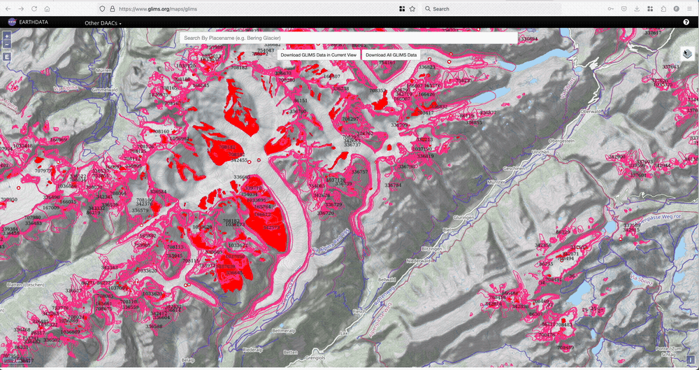

Working with the RGI and prepare glaciers for a run#
The glacier outlines obtained from the Randolph Glacier Inventory are the reference dataset for global and regional applications in OGGM. The current version supported by is V6, and OGGM ships with a slightly modified version which we called 62. OGGM also supports RGI 7, but not yet for full modelling workflows.
Tags: beginner, glacier-directory, workflow, RGI
Find out the ID of a glacier#
If there is a glacier you like, and you would like to know their RGI6 or RGI7 id, we recommend the GLIMS glacier viewer. To find the RGI6 ID, you’ll need to tick the “RGI6” box in the map layers, then click on the glacier of your choice as illustrated below.

Download the glacier outlines#
To download this version, simply do:
# this might take a couple of minutes!
from oggm import utils
utils.get_rgi_dir(version='62') # path to the data after download - for RGI7, you can use '70G' (for the glacier product) or '70C' (for the glacier complex product)
'/github/home/OGGM/rgi/RGIV62'
Access a region file#
The RGI is divided in 19 regions (and many more sub-regions, not plotted here):
 Source: the RGI consortium
Source: the RGI consortium
fr = utils.get_rgi_region_file(11, version='62') # Central Europe
The RGI region files are shapefiles, a vector format commonly used in GIS applications. The library of choice to read shapefiles in python is geopandas:
import geopandas as gpd
gdf = gpd.read_file(fr)
The RGI files and their attributes#
The gdf variable is a GeoDataFrame, i.e. you can use most of the tools you know from pandas’ DataFrames:
len(gdf)
3927
gdf.head()
| RGIId | GLIMSId | BgnDate | EndDate | CenLon | CenLat | O1Region | O2Region | Area | Zmin | ... | Lmax | Status | Connect | Form | TermType | Surging | Linkages | Name | check_geom | geometry | |
|---|---|---|---|---|---|---|---|---|---|---|---|---|---|---|---|---|---|---|---|---|---|
| 0 | RGI60-11.00001 | G013599E47495N | 20030799 | 20030999 | 13.5987 | 47.4949 | 11 | 1 | 0.122 | 2191 | ... | 461 | 0 | 0 | 0 | 0 | 9 | 9 | None | None | POLYGON ((13.60035 47.4933, 13.59995 47.49332,... |
| 1 | RGI60-11.00002 | G013614E47485N | 20030799 | 20030999 | 13.6135 | 47.4845 | 11 | 1 | 2.292 | 2203 | ... | 1853 | 0 | 0 | 0 | 0 | 9 | 9 | None | None | POLYGON ((13.60638 47.47578, 13.60599 47.47579... |
| 2 | RGI60-11.00003 | G013596E47484N | 20030799 | 20030999 | 13.5960 | 47.4835 | 11 | 1 | 0.851 | 2280 | ... | 1140 | 0 | 0 | 0 | 0 | 9 | 9 | None | None | POLYGON ((13.59765 47.47613, 13.59726 47.47614... |
| 3 | RGI60-11.00004 | G013583E47481N | 20030799 | 20030999 | 13.5829 | 47.4807 | 11 | 1 | 0.053 | 2319 | ... | 382 | 0 | 0 | 0 | 0 | 9 | 9 | None | None | POLYGON ((13.58283 47.47969, 13.58243 47.47971... |
| 4 | RGI60-11.00005 | G013603E47477N | 20030799 | 20030999 | 13.6026 | 47.4774 | 11 | 1 | 0.057 | 2656 | ... | 202 | 0 | 0 | 0 | 0 | 9 | 9 | None | None | POLYGON ((13.60076 47.47519, 13.60036 47.47521... |
5 rows × 24 columns
gdf[['Area']].plot(kind='hist', bins=100, logy=True);
gdf[['Aspect']].plot(kind='hist', bins=45);
Selecting glaciers per attribute#
You may want to select all glaciers in the subregion 2 (Pyrenees):
gdf_sel = gdf.loc[gdf.O2Region == '2']
'Glacier area in the Pyrenees: {} km2'.format(gdf_sel.Area.sum())
'Glacier area in the Pyrenees: 3.183 km2'
Selecting glaciers in a basin#
Let’s use a file shipped with OGGM for a start:
path = utils.get_demo_file('rofental_hydrosheds.shp')
basin = gpd.read_file(path)
basin.plot();
And select all glaciers within this shape:
import shapely.geometry as shpg
in_bas = [basin.geometry.contains(shpg.Point(x, y))[0] for
(x, y) in zip(gdf.CenLon, gdf.CenLat)]
gdf_sel = gdf.loc[in_bas]
ax = basin.plot();
gdf_sel.plot(ax=ax, edgecolor='k');
Select glaciers by their ID#
Each glacier in the RGI has a unique ID. It is sometimes difficult to find out which one, but some tools can help you out. For example, the GLIMS viewer allows to select glaciers and then see their ID. For example, the Aletsch Glacier in the Swiss Alps:
al = utils.get_rgi_glacier_entities(['RGI60-11.01450'], version='62')
al.plot(edgecolor='k');
Use the RGI files to start an OGGM run#
RGI files can be given as input to OGGM to make a run:
from oggm import cfg, workflow, tasks, DEFAULT_BASE_URL
cfg.initialize(logging_level='WARNING')
cfg.PARAMS['continue_on_error'] = True
cfg.PARAMS['use_multiprocessing'] = True
cfg.PARAMS['border'] = 80
cfg.PATHS['working_dir'] = utils.gettempdir(dirname='OGGM-Rofental', reset=True)
# Go - get the pre-processed glacier directories
gdirs = workflow.init_glacier_directories(gdf_sel, prepro_base_url=DEFAULT_BASE_URL, from_prepro_level=5)
2024-08-23 15:29:10: oggm.cfg: Reading default parameters from the OGGM `params.cfg` configuration file.
2024-08-23 15:29:10: oggm.cfg: Multiprocessing switched OFF according to the parameter file.
2024-08-23 15:29:10: oggm.cfg: Multiprocessing: using all available processors (N=4)
2024-08-23 15:29:11: oggm.cfg: PARAMS['continue_on_error'] changed from `False` to `True`.
2024-08-23 15:29:11: oggm.cfg: Multiprocessing switched ON after user settings.
2024-08-23 15:29:12: oggm.workflow: init_glacier_directories from prepro level 5 on 54 glaciers.
2024-08-23 15:29:12: oggm.workflow: Execute entity tasks [gdir_from_prepro] on 54 glaciers
workflow.execute_entity_task(tasks.run_random_climate, gdirs, nyears=100,
y0=2009, halfsize=10, output_filesuffix='_2000')
ds2000 = utils.compile_run_output(gdirs, input_filesuffix='_2000')
2024-08-23 15:29:14: oggm.workflow: Execute entity tasks [run_random_climate] on 54 glaciers
2024-08-23 15:29:20: oggm.utils: Applying global task compile_run_output on 54 glaciers
2024-08-23 15:29:20: oggm.utils: Applying compile_run_output on 54 gdirs.
ds2000.sum(dim='rgi_id').volume.plot();

This shows the summed up volume evolution of all glaciers of the Rofental basin.
What’s next?#
look at the OGGM-Shop documentation
back to the table of contents